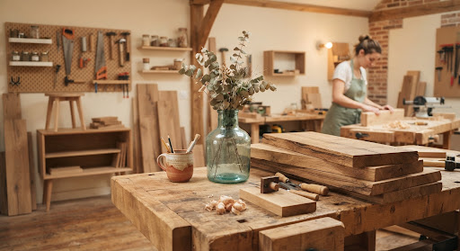
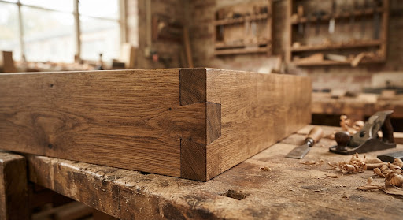
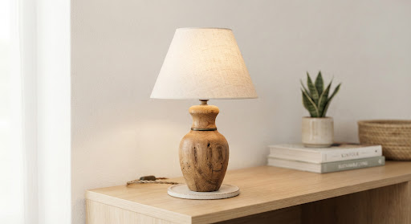
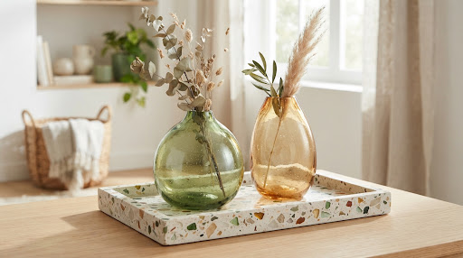
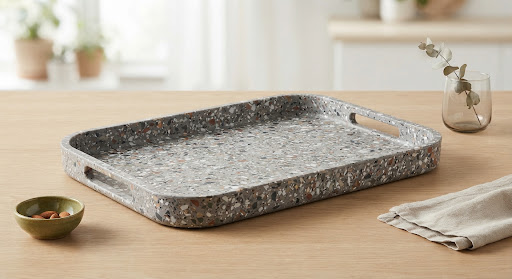
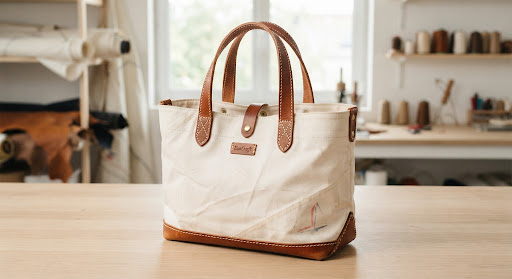

ÉCO-SCORE A+ • EMPREINTE MATÉRIELLE NEUTRE
Donner une seconde vie aux matières, créer du beau pour demain.
EcoArt relie le design contemporain à l'économie régénérative. Nous transformons les rebuts nobles — chutes de chêne séculaire, textiles dormants et verre soufflé — en objets d'exception conçus par 42 maîtres artisans.

PIÈCE SIGNATURE DU MOIS
Console "Estran" • Chêne d'église & Verrecullet
14,2 t
Matériaux revalorisés
Détournés des filières de destruction et d'enfouissement
42
Artisans partenaires
Ébénistes, verriers, céramistes et maroquiniers labellisés
100%
Pièces uniques ou ultra-courtes séries
Chaque texture témoigne de l'histoire vivante de la matière
SOURCING VERTUEUX
Les 4 Grandes Filières Circulaires
Filière 01
Bois de Réemploi
Chênes séculaires issus de déconstructions de granges normandes, chutes massives d'ateliers et palettes traitées sans chimie.

Filière 02
Tissus & Lin Surcyclés
Fins de rouleaux haute couture, toiles de chanvre vintage et lins lavés non utilisés collectés auprès de filatures des Hauts-de-France.

Filière 03
Verre Fused & Soufflé
Bouteilles de domaines viticoles et chutes de miroiterie fondues au four solaire pour créer des textures organiques bulleuses.

Filière 04
Plastique Terrazzo
Bouchons PEHD et bouteilles collectés en circuits scolaires puis thermocompressés pour façonner des plateaux ultra-résistants et marbrés.

CRÉATIONS RÉVÉLÉES
Nouveautés & Coups de Cœur

Atelier Lumina • Rennes
Lampe d'Appoint "Sillon"
Socle façonné dans une poutre de grange bretonne de 1890 et câble textile

Verrerie d'Éden • Biot
Soliflore "Ondée"
Bouteilles champenoises fondues au four électrique alimenté par…

Atelier Re-Form • Lyon
Plateau "Granulat"
Élaboré à partir de 240 bouchons collectés par une association sportive…

Voilerie Sauvée • Lorient
Cabas "Alizé 04"
Spinnaker de régate réformé assemblé à des chutes de sellerie équestre…
MANIFEST VIVANT
Une Éthique Sans Concession
Nous redéfinissons le luxe contemporain : la valeur d'un objet ne réside pas dans l'extraction de nouvelles ressources mais dans la dignité de sa transformation.
01
Collecte Locale & Traçable
100% de nos matières sont sourcées à moins de 250 km des ateliers. Un passeport numérique infalsifiable retrace le bâtiment d'origine de votre meuble ou l'histoire du tissu surcyclé.
Passeport matière inclus
02
Savoir-Faire d'Exception
Sublimer la patine du temps exige une virtuosité technique supérieure au neuf. Nos artisans conjuguent gestes ancestraux des Compagnons et technologies de découpe douce.
Membres Métiers d'Art
03
Zéro Déchet & Éco-Durabilité
Dans nos ateliers partenaires, rien ne se perd : les sciures réchauffent les séchoirs, les micro- chutes de cuir deviennent poignées et les emballages sont tous réutilisables en boucle consigne.
Boucle fermée certifiée